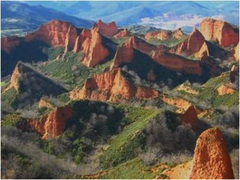
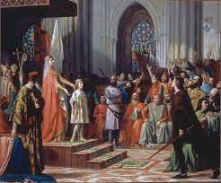

La Edad Antigua o Antigüedad es un periodo tradicional, muy utilizado en la periodización de la historia humana, definido por el surgimiento y desarrollo de las primeras civilizaciones que tuvieron escritura, llamadas por ello «civilizaciones antiguas». Tradicionalmente ha sido el período inicial de la historia propiamente dicha, iniciada con la invención de la escritura, precedida de la prehistoria. Algunos esquemas periódicos consideran que existe una etapa denominada «protohistoria», entre la prehistoria y la Edad Antigua, definida por el surgimiento de las primeras civilizaciones sin escritura.
Durante la Edad Antigua surgieron y se desarrollaron cientos de civilizaciones de gran importancia en todos los continentes, muchas de las cuales generaron productos, instituciones, conocimientos y valores que aún se encuentran presentes en la actualidad, desde Sumeria (IV milenio a. C.) y el Antiguo Egipto, pasando por las antiguas civilizaciones védicas en la India, la China Antigua, las antiguas Grecia y Roma, el Imperio aqueménida en Persia, la Antigua Sudamérica, entre muchos otros.
En el curso de la Edad Antigua surgieron las ciudades y el proceso de urbanización, el Estado, el derecho y la ley, así como grandes religiones como el budismo y el cristianismo.
Sea cual fuera el criterio empleado, coincidiendo en tiempo y lugar, unos y otros procesos cristalizaron en el inicio de la vida urbana (ciudades muy superiores en tamaño, y diferentes en función, a las aldeas neolíticas); en la aparición del poder político (palacios, reyes) y de las religiones organizadas (templos, sacerdotes); en una compleja estratificación social; en grandes esfuerzos colectivos que exigen la prestación de trabajo obligatorio; en el establecimiento de impuestos y el comercio de larga distancia (todo lo que se ha venido en llamar «revolución urbana»).Este nivel de desarrollo social, que por primera vez se alcanzó en la Sumeria del IV milenio a. C. (espacio propicio para la constitución de las primeras ciudades-estado competitivas a partir del sustrato neolítico), llevaba ya cuatro milenios desarrollándose en el Creciente Fértil.A partir de ellas, y de sucesivos contactos (tanto pacíficos como violentos) de pueblos vecinos (culturas sedentario-agrícolas o nómada-ganaderas que se nombran tradicionalmente con términos de validez cuestionable, más propios de familias lingüísticas que de razas humanas: semitas, camitas, indoeuropeos, etc.), se fueron conformando los primeros estados de gran extensión territorial, hasta alcanzar el tamaño de imperios multinacionales.
Procesos similares tuvieron lugar en diversos momentos según el área geográfica (sucesivamente Mesopotamia, el valle del Nilo, el subcontinente indio, China, la cuenca del Mediterráneo, la América precolombina y el resto de Europa, Asia y África); en algunas zonas especialmente aisladas, algunos pueblos cazadores-recolectores actuales aun no habrían abandonado la prehistoria mientras que otros entraron violentamente en la edad moderna o la contemporánea de la mano de las colonizaciones de los siglos XVI al XIX.
Los pueblos cronológicamente contemporáneos a la Historia escrita del Mediterráneo Oriental pueden ser objeto de la protohistoria, pues las fuentes escritas por romanos, griegos, fenicios, hebreos o egipcios, además de las fuentes arqueológicas, permiten hacerlo.
Antes de la llegada de los romanos, se sabe que los territorios que conforman hoy Castilla y León estaban ocupados por diversos pueblos celtas, como los vacceos, los autrigones, los vetones, astures, cántabros, turmogos o celtiberos.
Con la llegada de las tropas romanas, se dieron enfrentamientos entre los pueblos prerromanos y estas. En la historia queda la resistencia de Numancia, cerca de la actual Soria.
La romanización fue imparable, y hasta nuestros días han quedado grandes obras de arte romanas, principalmente el Acueducto de Segovia así como muchos restos arqueológicos como los de la antigua Clunia y la Vía de la Plata, con origen en Astorga y que cruza el oeste de la comunidad hasta la capital de Extremadura, Mérida.
Según el obispo Hidacio en su Chronicon, los pueblos suevos y vándalos hasdingos —que junto a vándalos silingos y alanos habían entrado en la península ibérica por el paso de Roncesvalles entre septiembre y octubre de 409— cruzaron el norte de la meseta Norte (actuales provincias de Burgos, Palencia y León) hasta su establecimiento en la Gallaecia, en las ciudades de Bracara (Braga) y Lvcvs (Lugo). Eventualmente estos pueblos germanos se extendieron por la parte oeste de la península (Gallaecia, Lusitania y parte occidental de la Cartaginense).Roma pretendió que los visigodos se ocuparan de estos invasores y, a raíz de las hostilidades iniciadas por el rey suevo Rekhiario, constituyó el inicio de la intervención visigoda en la península. En 455 tuvo lugar una batalla en el río Órbigo —cerca de Asturica, actual Astorga— que enfrentó a visigodos, —liderados por Teodorico II— y suevos.A partir de la victoria visigoda fueron atacadas varias ciudades de la zona sueva, como la propia Asturica y el Castrum Coviacense (actual Valencia de Don Juan).
A lo largo del resto del siglo V —de forma paralela a la definitiva desintegración del poder romano central y al fin de la Edad Antigua en la civilización occidental— se asentó en la meseta Norte un contingente de colonos visigodos. Una de las áreas de asentamiento más intenso, conocida como los Campos Góticos, se identifica en la actualidad con la Tierra de Campos.
Vivían en grandes poblados amurallados situados en cerros o lugares fáciles de defender. También existían ciudades, entre las que destacan la ciudad arévaca de Numancia (Soria) y la ciudad vaccea de Pallantia (Palencia). Tanto en los poblados como en las ciudades, las viviendas solían ser rectangulares y se construían conpiedra y adobe. Las necrópolis estaban a cierta distancia de los poblados, normalmente en zonas bajas. Practicaban la incineración de los difuntos.
La principal actividad económica era la ganadería (ovejas, caballos…), aunque también se practicaba la agricultura.
Los objetos de hierro eran muy abundantes: espadas de doble filo, hoces, podaderas, hachas, tenazas, etc.La cerámica se hizo cada vez más variada (cuencos,jarras…). Se elaboraba con torno y se decoraba con representaciones de animales, guerreros, etc. pintados en color negro.
Destacan los «verracos», esculturas muy toscas de animales (similares a toros y cerdos). No se conoce su utilidad, aunque se han encontrado más de 400 ejemplos.Destacan los toros de Guisando (El Tiemblo, Ávila), que son varios verracos de granito de gran tamaño. Se realizaban también joyas de oro y plata (torques1, brazaletes,fíbulas…).
Estos pueblos se organizaban en gentilidades, es decir,en grupos cuyos miembros estaban emparentados y eran descendientes de un antepasado común.
Se regían por un consejo de ancianos, aunque también existían asambleas populares, que se reunían para tomar decisiones importantes, como era, por ejemplo, la elección de los caudillos para la guerra.
Se practicaban la agricultura (cereales y vid) y la ganadería (caballos, cerdos…). Las actividades artesanales y el comercio tuvieron menor importancia, pero se sabe que las comunidades asentadas cerca de los campamentos romanos fueron las primeras en utilizar la moneda. La minería fue la actividad que alcanzó mayor desarrollo. Todas las minas pasaron a ser propiedad de Roma. Los romanos se reservaron la explotación directa de las minas de oro y cedieron en arrendamiento la explotación de las restantes. La actividad minera se concentró especialmente en la provincia de León, donde existían importantes yacimientos de oro: Las Médulas (El Bierzo), el valle del río Duerna, Las Omañas, Corporales (Truchas). También se explotaba plata, cobre, minio y malaquita1. La gran riqueza que los romanos obtenían apenas benefició a las poblaciones del entorno y contribuyó a la transformación del paisaje natural (ruina montium).
Entre las construcciones romanas castellano-leonesas se encuentran el teatro, el anfiteatro, las termas y el foro de Clunia (Burgos) y el arco de triunfo de Medinaceli (Soria).
También existen murallas como las de León, puentes como el de Salamanca, sobre el río Tormes, y el de Fuentidueña (Segovia), y acueductos, como los de Tiermes (Soria) y Segovia. Destaca este último, construido con sillares de granito, que transportaba el agua desde la Sierra de Guadarrama hasta Segovia.
Se han hallado diversas esculturas exentas que representan a dioses (Isis, Dionisos, Venus…) y a héroes (Heracles), así como retratos, la mayoría de personas desconocidas. Destaca el sarcófago de Los Husillos (Palencia), decorado con relieves que representan escenas relacionadas con la leyenda de Orestes.
El final de la Edad Antigua en la civilización occidental coincide con la caída del Imperio romano de Occidente, en el año 476 (el Imperio romano de Oriente sobrevivió toda la Edad Media hasta 1453 como Imperio bizantino), aunque tal discontinuidad no se observa en otras civilizaciones. Por tanto, las divisiones posteriores (Edad Media y Edad Moderna) pueden considerarse válidas solo para aquella, mientras que la mayor parte de Asia y África, y con mucha más claridad América, son objeto en su historia de una periodización propia.
Algunos autores culturalistas hacen llegar la Antigüedad tardía europea hasta los siglos VI y VII, mientras que la escuela «mutacionista» francesa la extiende hasta algún momento entre los siglos IX y XI. Distintas interpretaciones de la historia hacen hincapié en cuestiones económicas (transición del modo de producción esclavista al modo de producción feudal, desde la crisis del siglo III), políticas o ideológicas (desaparición del imperio e instalación de los reinos germánicos desde el siglo V), religiosas (sustitución del paganismo politeísta por los monoteísmos teocéntricos: el cristianismo —siglo IV— y posteriormente el islam —siglo VII—), filosóficas (filosofía antigua por la medieval) y artísticas (evolución desde el arte antiguo —clásico— hacia el arte medieval —paleocristiano y prerrománico—).